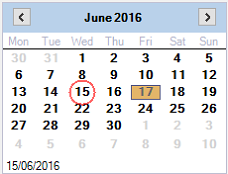

The date selector allows staff to change the current contents of the diary to a specific date or
range of dates.
The current day will be highlighted in red, the selected date will have an orange background.
When team view is shown staff can select a single day to view all appointments for the user.

When week view is selected the appointments for the selected staff member will be shown
for a week.

Colour Scheme
The diary has several colour schemes that can be used to change how it looks. Click the
colour scheme button and select the scheme you wish to use.
Ignore Working Hours
The diary enforces strict working hours, and appointments cannot be created if they will go
outside of the working hours for a staff member, if Ignore working hours is selected then
appointments can be created outside of the staff members normal hours.